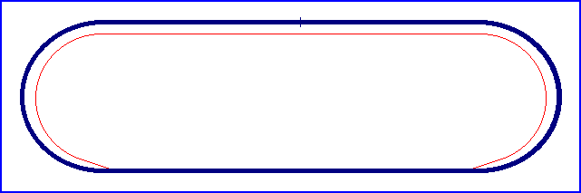

| Length | 1.029 Miles // 1.656 km |
| Direction | Anticlockwise |
Contact Information |
|
| Address |
Chicago Motor Speedway 3301 South Laramie Cicero IL 60804 |
| Telephone | +1 (1)773 2422277 |
| Website | http://www.chicagomotorspeedway.com |
Chicago Motor Speedway

| Length | 1.029 Miles // 1.656 km |
| Direction | Anticlockwise |
Contact Information |
|
| Address |
Chicago Motor Speedway 3301 South Laramie Cicero IL 60804 |
| Telephone | +1 (1)773 2422277 |
| Website | http://www.chicagomotorspeedway.com |
Lasted Updated: 15 November 2002 15:18:40 GMT Standard Time
Related Information |